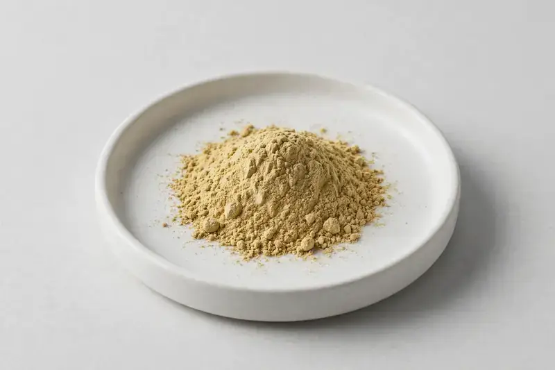

Camellia sinensis — a leaf extract standardized around EGCG and polyphenols for metabolic and antioxidant formulations.

Overview
Green Tea Extract is derived from the leaf of Camellia sinensis and commonly standardized to EGCG and total polyphenols, the markers most supplement buyers reference. It is a staple input for metabolic and antioxidant capsule and tablet lines. As a Xi'an-based trading company, HerbChina Extracts sources through vetted partner producers; buyers share their target EGCG spec and we confirm feasibility honestly.
Specifications below reflect commonly requested options in the market — not a stock list. Share your target spec and we'll confirm exactly what we can supply, honestly.
| Specification | Details |
|---|---|
| Botanical identity | Camellia sinensis, leaf |
| Source material | Leaf |
| Marker compound | EGCG / polyphenols — commonly requested: 50% EGCG (HPLC), 98% polyphenols (UV) |
| Appearance | Light yellow-brown to tan fine powder |
| Analytical methods | Methods referenced in buyer specifications: HPLC, UV |
| Mesh size | Typically 80–100 mesh (confirm per inquiry) |
| Testing | COA/TDS arranged on request; scope agreed per your spec |
Applications
Documentation
We don't claim in-house labs or certifications we don't hold. COA and TDS documents can be arranged on request, and testing scope is agreed against your specification before supply.
Buying guide
When comparing green tea extract lots, clarify whether the COA reports EGCG by HPLC and polyphenols by UV, since these two figures are not interchangeable. A single COA may list both, but they answer different questions: EGCG is a specific catechin, while total polyphenols include a broader set of compounds. Ask for the method statement and, if EGCG is a key specification, a chromatogram. Also confirm whether the result is on a dried-weight basis, as moisture variation can shift percentages between lots.
Decaffeination status is another checkpoint. If your formulation requires low or decaffeinated green tea extract, the COA should report residual caffeine with a defined method. Appearance can help with first-pass screening: light yellow-brown to tan fine powder is typical, while very dark or unevenly colored material may indicate overheating or oxidation during processing. Ask about the extraction solvent and drying method, since these influence both catechin retention and color.
Green tea extract is hygroscopic and prone to caking, and catechins can degrade with heat, light, and moisture exposure. Store sealed in a cool, dry, dark place, and reseal promptly after sampling. If you blend it into premixes, check compatibility with other hygroscopic ingredients. For shipments, confirm moisture-barrier packaging and avoid routes with prolonged high heat. These steps help preserve the EGCG and polyphenol levels you specified.
FAQ
Related products
Epigallocatechin Gallate
Key marker: EGCG 90-98% HPLC
View specs →Camellia sinensis
Key marker: EGCG
View specs →Camellia sinensis
Key marker: EGCG
View specs →Silybum marianum
Key marker: Silymarin
View specs →Ginkgo biloba
Key marker: Flavone Glycosides
View specs →Panax ginseng
Key marker: Ginsenosides
View specs →Serenoa repens
Key marker: Fatty Acids
View specs →Berberis aristata
Key marker: Berberine
View specs →Buyer guides
Buyer’s guide
Identity, actives, heavy metals, micro — what each section of a Certificate of Analysis means, and the red flags that tell you to walk away.
Read the guide →Buyer’s guide
Section-by-section COA walkthrough — marker assays, heavy metals, micro panels, red flags, and a buyer checklist.
Read the guide →Send your target spec and volumes — we'll respond with a tailored quotation.
Request a Quote